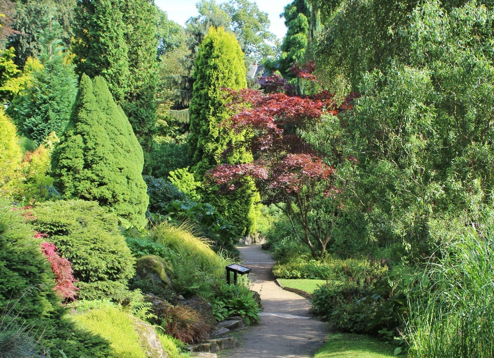
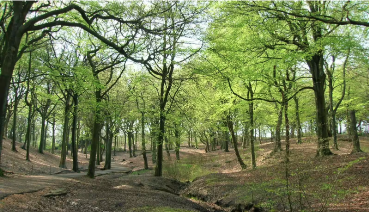
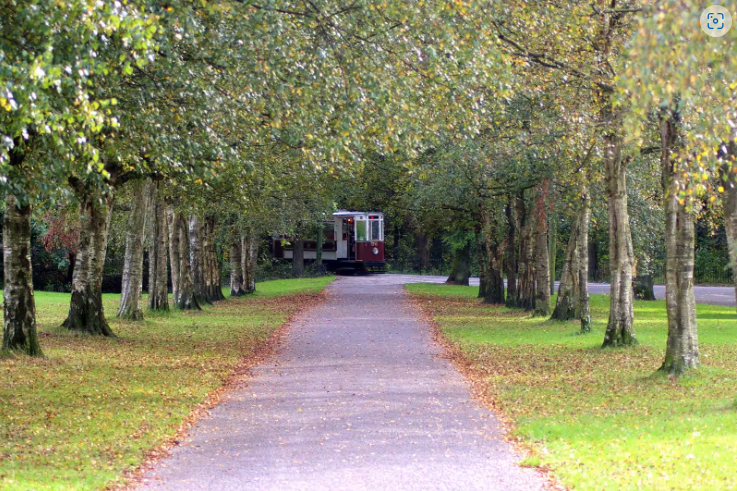

1 / 3

Caption Text
2 / 3

Caption Two
3 / 3

Caption Three
Manchester is home to numerous parks, gardens and nature reserves waiting to be explored. Spending time in green spaces has been shown to reduce stress, improve mood and even boost your overall well-being.
Whether you're looking for a quiet spot to relax, a place to exercise or simply want to connect with nature, Manchester's green spaces offer something for everyone.
.Witworth Park beckons with its vibrant tapestry of nature and history, offering a sanctuary from the bustling rhythm of urban life. A stroll through its leafy pathways is an invitation to embrace serenity and explore the secrets of its verdant expanse. For the young and curious, Witworth Park is not just a landscape, but a canvas awaiting their footprints to paint stories of adventure and discovery. Engage with the whispers of the trees, let the melodies of chirping birds be your soundtrack, and immerse yourself in the timeless charm of its Victorian architecture. Amidst the hustle of modernity, a walk in Witworth Park is a gentle reminder to pause, breathe, and reconnect with the wonders of the natural world, fostering not just physical well-being but a sense of wonder and belonging in the hearts of the youth.

Walking in the embrace of nature has several advantages that go beyond the health benefits. A green space's lush surrounds offer a tranquil setting that can ease tension and quiet the mind. Inhaling oxygen- and phytoncide-rich fresh air can revitalise your body and spirit, leaving you feeling renewed and energised. Furthermore, research have indicated a favourable correlation between time spent in nature and decreased symptoms of anxiety and depression, which supports the link between strolling in green spaces and improved mood and mental health. You connect with the natural world and give your brain a chance to relax and reset as you stroll among the vivid flowers and lush greenery, which promotes creativity and clarity of mind.

This country park named Tandle Hill Country Park is located in Royton, Greater Manchester, England. It is roughly 110 acres in size and is made up of both open grassland and beech woods. The park has many trails and pathways leading into the surrounding area, as well as a countryside centre, picnic spaces, and a children's play area.

With plenty of entertaining things for families to enjoy, it's the biggest park in Manchester and the biggest municipal park in all of Europe. For car access, the SatNav postcode is M25 2SW. Heaton Park can be reached by regular MetroLink Trams and buses. Heaton Park in Manchester may be the ideal destination for a budget-friendly family outing in the North West. It offers plenty of room, lush greenery, and two kid-friendly playgrounds, in addition to a plethora of events, activities, family adventures, and sports to enjoy.
If you have any questions or inquiries, please fill out the form below: